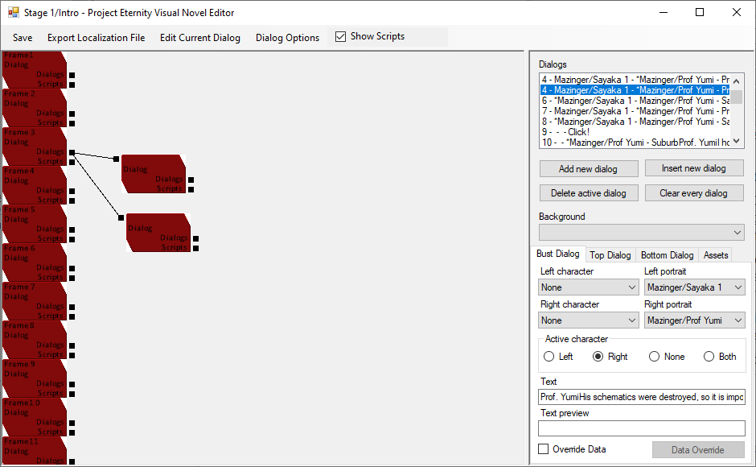

Scripting
Scripts: When you check the Show script checkbox at the top you are greeted with red boxes representing each a dialog from the dialog list. You can click on one to also select the corresponding one in the regular Dialog list on the right. You can drag boxes around and you can hold Alt and drag click to scroll up and down.
Linking dialog: You can link boxes together as shown above to create a choice. The text visible in the choice will be based on the Text Preview field of the dialog. You can then use the Edit Current dialog button at the top to execute scripts when the choice is picked on each choice. This way you can save the choice the player took each time.